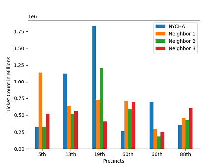

This dataset shows the total number of crime that has been committed since the start of the year. I have taken the average of all the neighboring precincts as well to compare the results. It shows that there is very little correlation between the amount of crime committed and the respective neighborhood.
This dataset shows the total number of crime that has been committed since the start of the year. I have taken the average of all the neighboring precincts as well to compare the results. It shows that there is very little correlation between the amount of crime committed and the respective neighborhood.
 This shows the % change in crime count comparing it to 2020. It was interesting to see that most NYCHA neighborhoods have their crime rates decreased during the pandemic. Especially since, I thought that NYCHA neighborhoods would have the most social unrest. But it turns out most of the unrest is coming from other neighborhoods.
This shows the % change in crime count comparing it to 2020. It was interesting to see that most NYCHA neighborhoods have their crime rates decreased during the pandemic. Especially since, I thought that NYCHA neighborhoods would have the most social unrest. But it turns out most of the unrest is coming from other neighborhoods.
 This data shows the % change in crime count over the course of two years. I feel that the data is pretty heavily skewed because the pandemic actually reduced crime count significantly, which is why a majority of the neighborhoods actually experienced a decrease in overall crime count.
This data shows the % change in crime count over the course of two years. I feel that the data is pretty heavily skewed because the pandemic actually reduced crime count significantly, which is why a majority of the neighborhoods actually experienced a decrease in overall crime count.
This is the 11 year % change in crime count, it shows that overall, most of the neighborhoods that were looked at had a decrease in crime rate. Especially those that were NYCHA neighborhoods. I think that the notion that NYCHA neighborhoods were dangerous was started in the past but since then there have been huge decreases.

This is the total tickets issued in NYCHA neighborhoods as well as multiple neighborhoods that were around a NYCHA neighborhood. This data set shows me that with an exception to the 19th precinct, which is located in a very prominent area in Manhattan, some NYCHA neighborhoods were indeed being ticketed more than others, but it is not a citywide issue.
This is the total amount of money fined by those issued tickets. This is especially important because that is money that the city is taking from those neighborhoods. The data shows that a million dollars is being taken from the NYCHA community in the 13th precinct every year, and frankly I think there needs to be a dive to find out why.